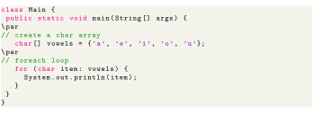

Next: Disadvantages of Using for-each Up: Java for-each Loop Previous: for loop Contents

Ouput
Here, the output of both programs is the same. However, when we analyze both the programs, we can see the for-each loop is easier to write. It also makes our code more readable. This is why for-each loop is preferred more than for loop in while working with arrays or collections.